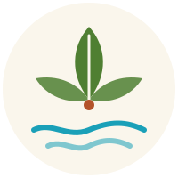
Los CanelosCabañas · Pucón18km del camino Pucón – Caburgua
Cabañas de madera en 20 hectáreas de campo, con ovejas, tinaja caliente y un bote esperando en la orilla. Para desconectarse de verdad.
Un día en Los Canelos
Aquí el día se ordena solo: el campo en la mañana, el río a mediodía y el agua caliente cuando cae el sol.
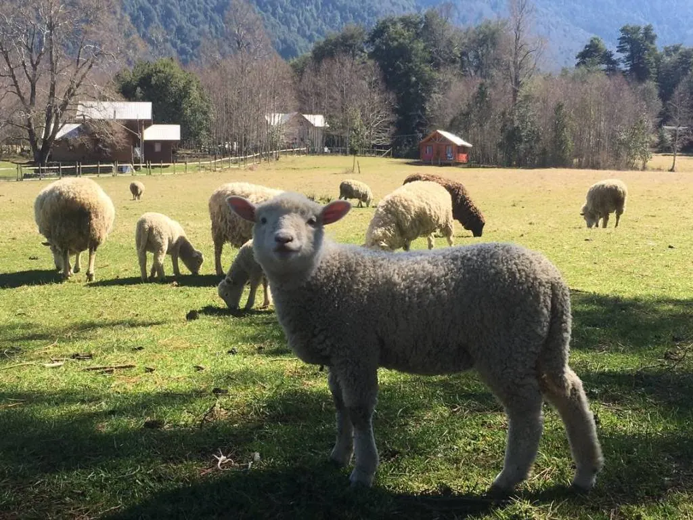
Los niños (y no tan niños) salen a ver a los animales de la granja: ovejas, corderos y vacas pastando frente a las cabañas.
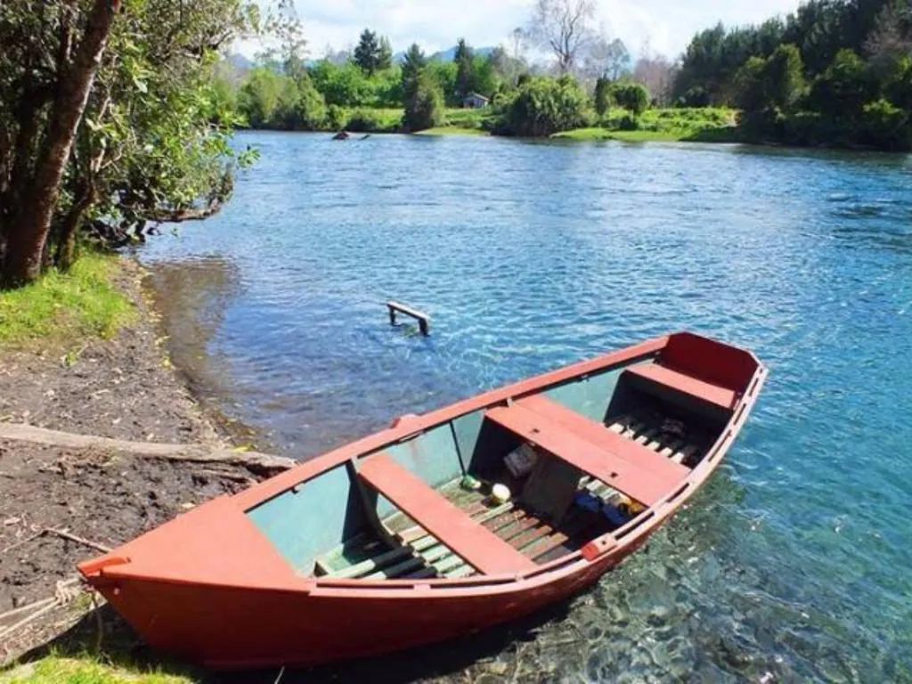
El Liucura bordea la granja: aguas cristalinas para mojarse los pies, pescar o salir a remar.
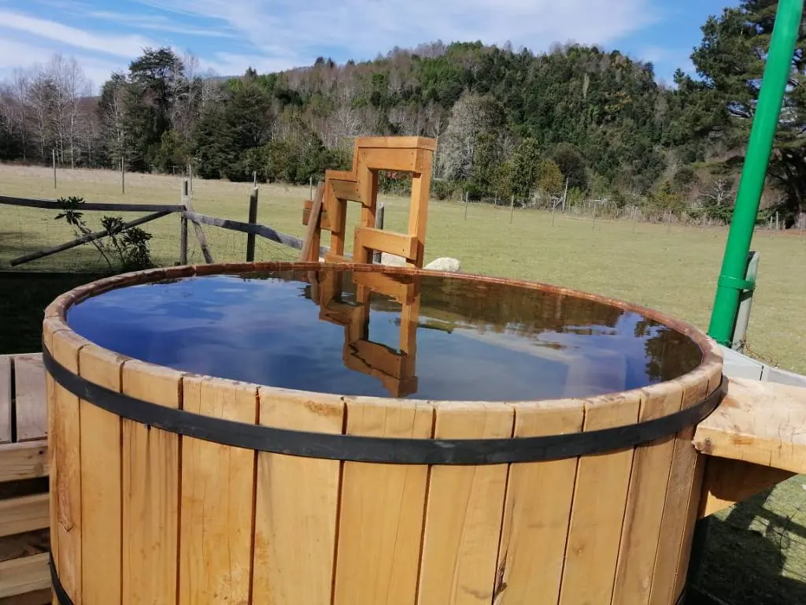
Agua caliente al aire libre, con el campo y los cerros de fondo. El mejor cierre del día.
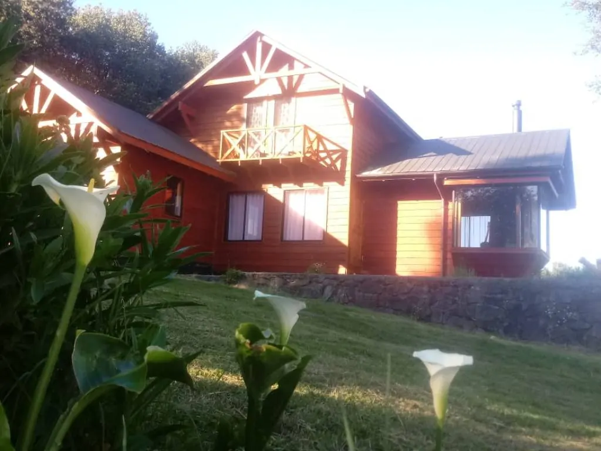
Cocina completa, baño privado y el sonido del río como música de fondo.
Las cabañas
Cabañas de madera repartidas en la granja, con distancia entre ellas para que cada familia tenga su propio rincón.
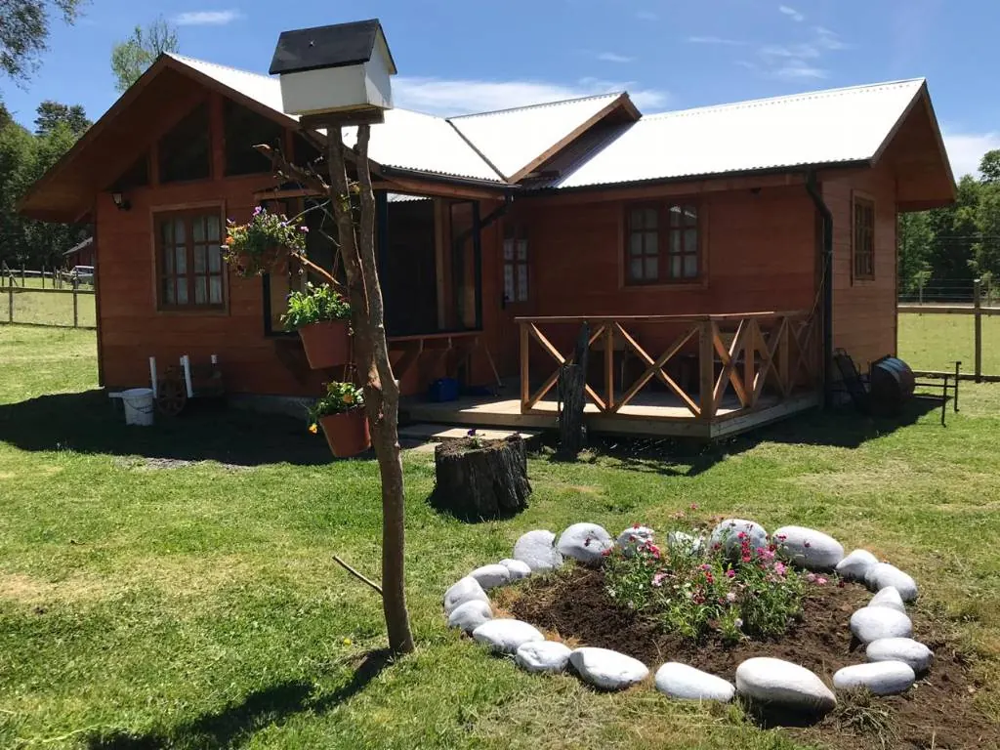
Con terraza y jardínPara el café de la mañana afuera.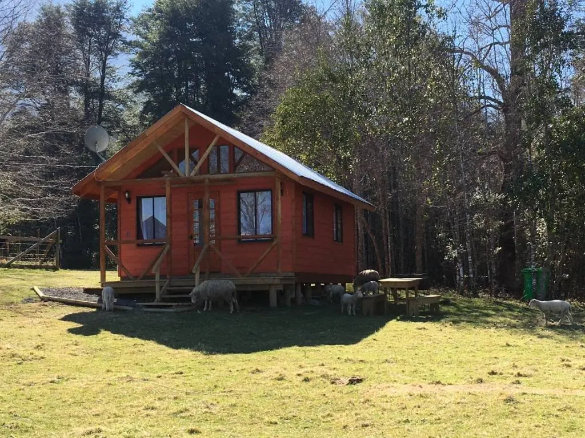
Al borde del bosqueSombra y silencio en verano.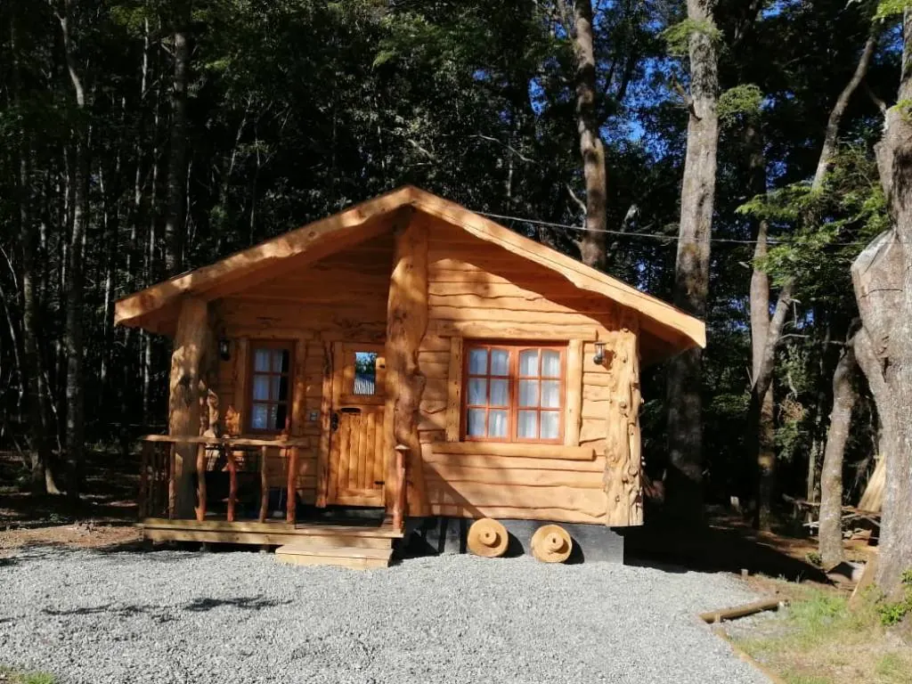
Para dosPequeña, cálida y entre árboles.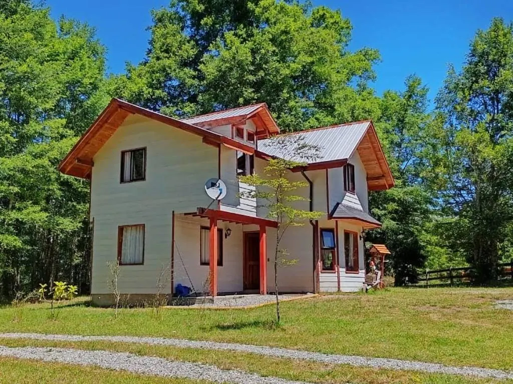
Para familias grandesDos pisos y mucho pasto alrededor.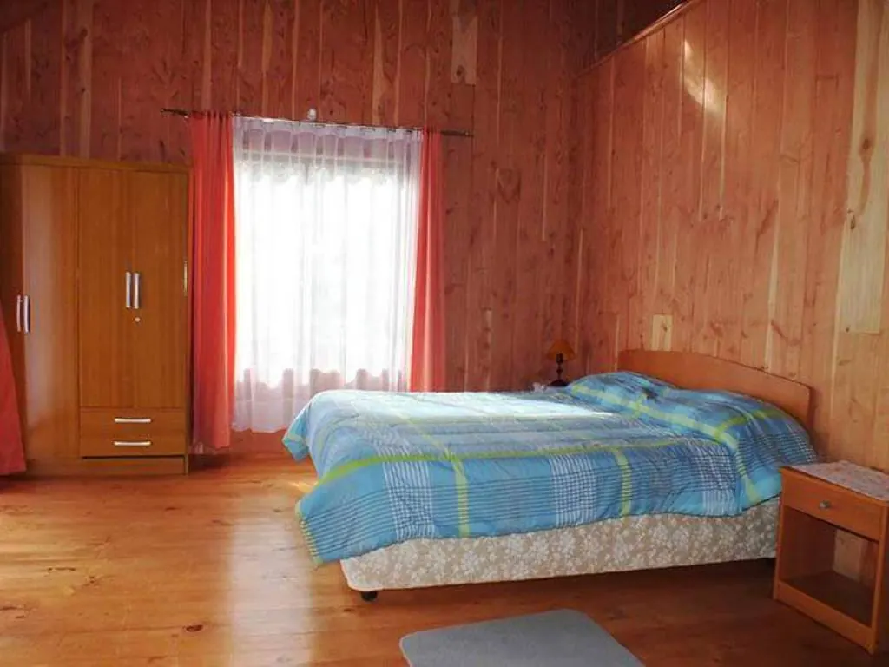
Por dentroMadera, luz y camas cómodas.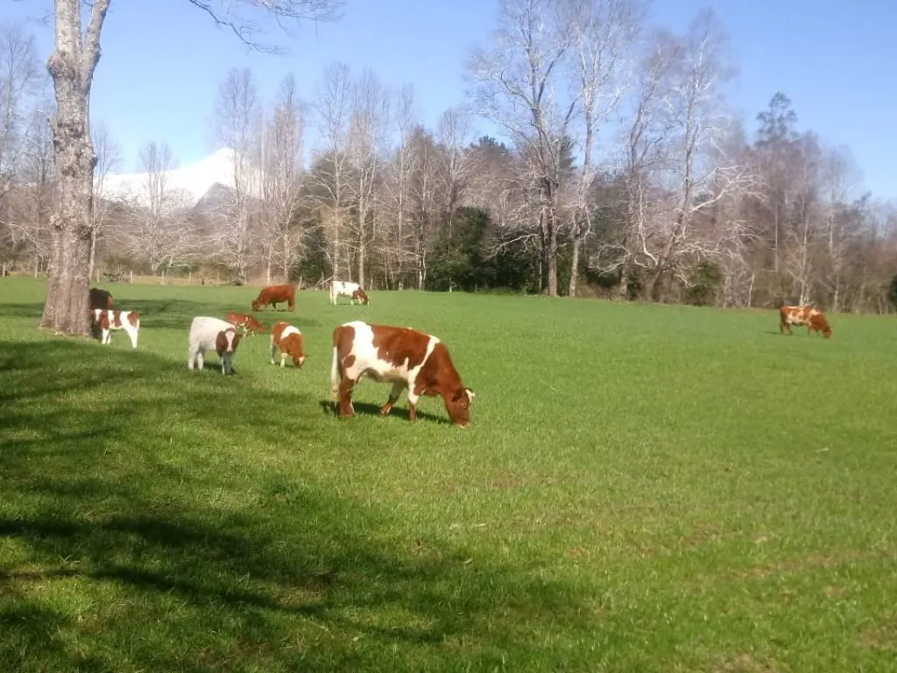
Los vecinosLa granja en plena vida.El río
Aguas turquesa y cristalinas que bajan entre el bosque. A pasos de su cabaña, y a minutos de los Ojos del Caburgua, el lago y el Parque Huerquehue.
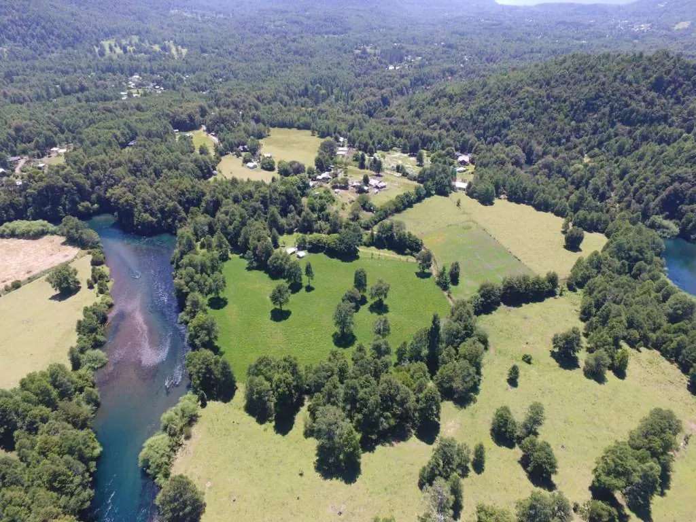
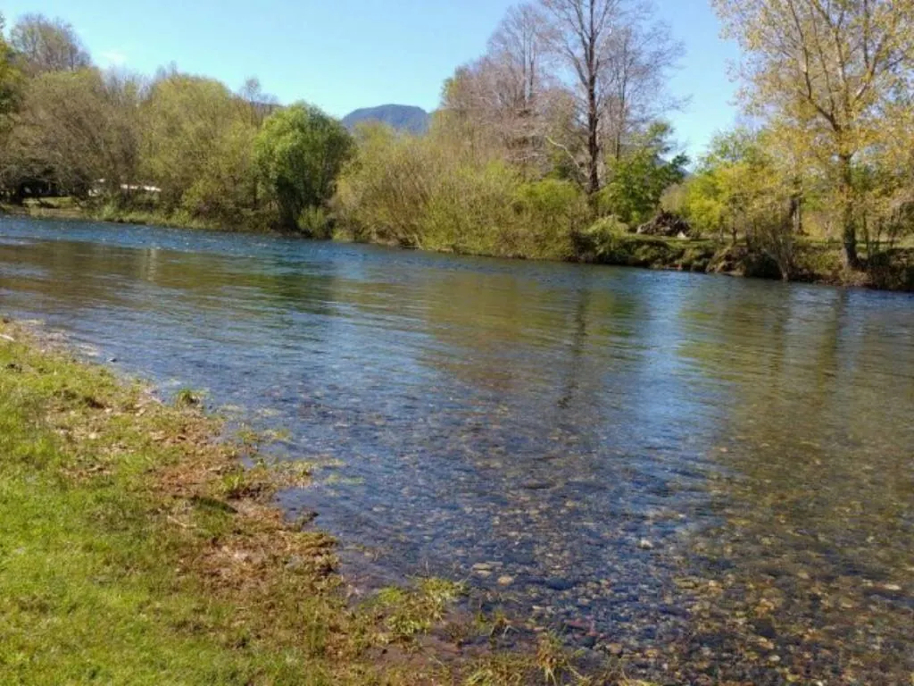
Reserve directo con nosotros: mejor tarifa, sin comisiones y respuesta personal por WhatsApp.
Escribir por WhatsAppBoceto preparado con las fotos públicas de Cabañas Los Canelos. En el sitio final van sus fotos, textos y tarifas actualizadas.
Propuesta de Red Vaeru para Cabañas Los Canelos
Garantía de portada: primero ven su portada terminada. Si no les convence, no pagan nada. Si les gusta, firmamos contrato y pagan el 50% para comenzar.
Hablar con Jorge por WhatsApp Ver el portafolio de Red Vaeru ↗